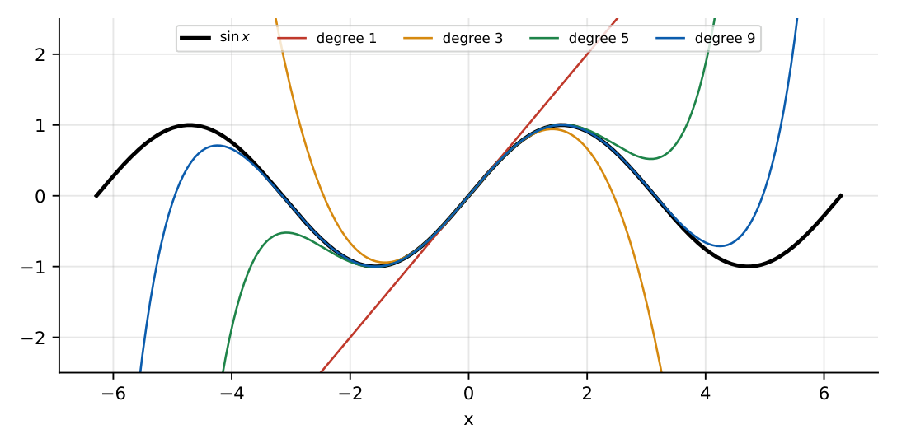

Calculus
In this chapter
Limits (standard forms and L’Hôpital), differentiability, maxima/minima, Taylor series, standard integrals and Leibniz rule, Mean Value Theorems, multiple integrals with change of order or variables.
2.1 Limits and continuity
\(\lim_{x\to0}\frac{\sin x}{x}=1\), \(\ \frac{\tan x}{x}\to1\), \(\ \frac{1-\cos x}{x^2}\to\frac12\), \(\ \frac{e^x-1}{x}\to1\), \(\ \frac{\ln(1+x)}x\to1\), \(\ (1+x)^{1/x}\to e\), \(\ (1+\tfrac ax)^x\to e^a\) (\(x\to\infty\)).
L’Hôpital: if \(f/g\) is \(0/0\) or \(\infty/\infty\), then \(\lim f/g=\lim f'/g'\) (when the latter exists).
\(f\) is continuous at \(a\) if \(\lim_{x\to a}f(x)=f(a)\). Differentiability implies continuity, not conversely (\(|x|\) at \(0\)). A continuous function on \([a,b]\) is bounded and attains its extrema (Weierstrass) and takes every intermediate value.
2.2 Differentiation and partial derivatives
Chain, product and quotient rules are assumed; useful: \(\frac{d}{dx}a^x=a^x\ln a\), \(\frac{d}{dx}x^x=x^x(1+\ln x)\), \(\frac d{dx}\sin^{-1}x=\frac1{\sqrt{1-x^2}}\), \(\frac d{dx}\tan^{-1}x=\frac1{1+x^2}\).
For \(z=f(x,y)\): \(dz=f_xdx+f_ydy\); \(f_{xy}=f_{yx}\) if continuous. Chain rule: \(\frac{dz}{dt}=f_x\dot x+f_y\dot y\). Euler’s theorem: if \(f\) is homogeneous of degree \(n\), \(xf_x+yf_y=nf\).
2.3 Maxima and minima
Single variable: \(f'(a)=0\); \(f''(a)>0\Rightarrow\) minimum, \(f''(a)<0\Rightarrow\) maximum; if \(f''(a)=0\) look at the first non-zero derivative of order \(n\): odd \(\Rightarrow\) inflection, even \(\Rightarrow\) extremum.
Two variables: \(f_x=f_y=0\) and \(D=f_{xx}f_{yy}-f_{xy}^2\). \(D>0,f_{xx}>0\): minimum; \(D>0,f_{xx}<0\): maximum; \(D<0\): saddle; \(D=0\): inconclusive.
\(f=x^3-3xy+y^3\): \(f_x=3x^2-3y=0\), \(f_y=3y^2-3x=0\Rightarrow(0,0),(1,1)\). \(D=36xy-9\). At \((0,0)\): \(D=-9<0\) saddle. At \((1,1)\): \(D=27>0\), \(f_{xx}=6>0\), minimum with \(f=-1\).
2.4 Taylor and Maclaurin expansions
\(f(x)=\sum\frac{f^{(n)}(a)}{n!}(x-a)^n\); Maclaurin is \(a=0\).
\(e^x=\sum\frac{x^n}{n!}\), \(\ \sin x=x-\frac{x^3}{3!}+\frac{x^5}{5!}-\cdots\), \(\ \cos x=1-\frac{x^2}{2!}+\cdots\), \(\ \frac1{1-x}=\sum x^n\ (|x|<1)\), \(\ \ln(1+x)=x-\frac{x^2}2+\frac{x^3}3-\cdots\), \(\ (1+x)^m=1+mx+\frac{m(m-1)}{2!}x^2+\cdots\)

2.5 Integration
\(\int_0^{\pi/2}\sin^nx\,dx=\int_0^{\pi/2}\cos^nx\,dx=\frac{(n-1)(n-3)\cdots}{n(n-2)\cdots}\times\{\pi/2\text{ if }n\text{ even};\,1\text{ if odd}\}\).
Even function: \(\int_{-a}^af=2\int_0^af\); odd: \(0\). Property: \(\int_0^af(x)dx=\int_0^af(a-x)dx\).
Leibniz: \(\frac d{dx}\int_{u(x)}^{v(x)}f(t)dt=f(v)v'-f(u)u'\).
Gamma function: \(\Gamma(n+1)=n\Gamma(n)=n!\), \(\Gamma(\tfrac12)=\sqrt\pi\); \(\int_0^\infty x^{n}e^{-x}dx=n!\).
Improper integrals. \(\int_1^\infty x^{-p}dx\) converges iff \(p>1\); \(\int_0^1x^{-p}dx\) converges iff \(p<1\). \(\int_{-\infty}^{\infty}e^{-x^2}dx=\sqrt\pi\).
2.6 Multiple integrals and volume
Order of integration can be swapped by redrawing the region (Fubini). Polar: \(dA=r\,dr\,d\theta\); cylindrical: \(dV=r\,dr\,d\theta\,dz\); spherical: \(dV=r^2\sin\theta\,dr\,d\theta\,d\phi\). Volume of a sphere \(\frac43\pi R^3\), area of a circle \(\pi R^2\). Jacobian: \(dx\,dy=|J|du\,dv\) with \(J=\partial(x,y)/\partial(u,v)\).
\(\int_0^1\!\int_x^1 e^{y^2}dy\,dx\): swap order: \(\int_0^1\!\int_0^y e^{y^2}dx\,dy=\int_0^1ye^{y^2}dy=\frac{e-1}2\).
2.7 Mean value and integral theorems
Rolle: \(f\) continuous on \([a,b]\), differentiable inside, \(f(a)=f(b)\Rightarrow\exists c:f'(c)=0\).
Lagrange MVT: \(\exists c\in(a,b):f'(c)=\frac{f(b)-f(a)}{b-a}\).
Cauchy MVT: \(\frac{f'(c)}{g'(c)}=\frac{f(b)-f(a)}{g(b)-g(a)}\).
Integral MVT: \(\int_a^bf=f(c)(b-a)\) for some \(c\); the average value of \(f\) is \(\frac1{b-a}\int_a^bf\).
Fundamental theorem: \(\frac d{dx}\int_a^xf=f(x)\).
Line and surface integrals (and the theorems of Green, Gauss and Stokes that connect them to double and volume integrals) are developed in Chapter 4.
(i) L’Hôpital applies only to \(0/0\) or \(\infty/\infty\). (ii) \(D=0\) at a stationary point does not give a saddle. (iii) A function with \(f'(c)=0\) need not have an extremum (\(x^3\)). (iv) Check convergence before evaluating improper integrals. (v) The Maclaurin series of \(\ln(1+x)\) converges only for \(-1<x\le1\).
Replace each function by its first non-vanishing Taylor term when taking limits at \(0\). For Wallis integrals use the alternating product and the \(\pi/2\) rule. For “average value” and “a point \(c\)” questions think MVT. For swapped integrals draw the region.
2.8 GATE problems
Q1. \(\lim_{x\to0}\frac{\sin 3x}{x}=\) (A) 0 (B) 1 (C) 3 (D) \(\infty\).
Q2. \(\int_{-1}^{1}x^3dx=\) (A) 0 (B) \(1/2\) (C) 1 (D) 2.
Q3. The Maclaurin series of \(e^{x}\) has coefficient of \(x^3\) equal to (A) \(1/2\) (B) \(1/3\) (C) \(1/6\) (D) \(1\).
Q4. A function with \(f(a)=f(b)\), continuous and differentiable between, has by Rolle’s theorem a point where (A) \(f=0\) (B) \(f'=0\) (C) \(f''=0\) (D) \(f'=1\).
Answers: Q1 (C). Q2 (A), odd integrand. Q3 (C). Q4 (B).
Q5. \(\lim_{x\to0}\frac{e^x-1-x}{x^2}=\) (A) 0 (B) \(1/2\) (C) 1 (D) \(\infty\).
Q6. The minimum value of \(f(x)=x^2-4x+7\) is (A) 2 (B) 3 (C) 4 (D) 7.
Q7. \(\int_0^{\pi/2}\sin^4x\,dx=\) (A) \(3\pi/16\) (B) \(\pi/4\) (C) \(3\pi/8\) (D) \(\pi/8\).
Answers: Q5 (B): \(e^x-1-x\approx x^2/2\). Q6 (B): vertex at \(x=2\), \(f=3\). Q7 (A): \(\frac{3\cdot1}{4\cdot2}\cdot\frac\pi2=\frac{3\pi}{16}\).
Q8. \(\int_0^\infty x^3e^{-x}dx=\) .
Q9. The area of the disc \(x^2+y^2\le4\) (polar integration) is \(k\pi\) with \(k=\) .
Q10. Average value of \(f(x)=x^2\) over \([0,3]\) is .
Answers: Q8: \(\Gamma(4)=6\). Q9: \(\int_0^{2\pi}\!\int_0^2r\,dr\,d\theta=4\pi\), \(k=4\). Q10: \(\frac13\cdot\frac{27}3=3\).
Q11. Which of the following improper integrals converge? (A) \(\int_1^\infty x^{-2}dx\) (B) \(\int_1^\infty x^{-1}dx\) (C) \(\int_0^1x^{-1/2}dx\) (D) \(\int_0^1x^{-1}dx\).
Answers: Q11: (A), (C).
T1. \(\lim_{x\to0}(1-\cos x)/x^2\)? T2. Nature of \((0,0)\) for \(f=x^2-y^2\)? T3. \(\Gamma(1/2)\)?
Answers: T1: \(1/2\). T2: saddle (\(D=-4<0\)). T3: \(\sqrt\pi\).
- Use Taylor leading terms for limits; L’Hôpital only for indeterminate forms.
- Stationary: \(f'=0\); 2-variable test with \(D=f_{xx}f_{yy}-f_{xy}^2\).
- Series: \(e^x,\sin x,\cos x,\ln(1+x),(1+x)^m,\frac1{1-x}\).
- Even/odd integrals, Wallis formula, \(\Gamma(n+1)=n!\), Leibniz rule.
- Rolle, Lagrange, Cauchy, integral MVT; \(p\)-test for improper integrals.